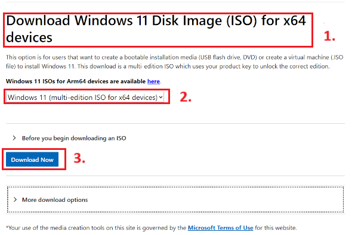
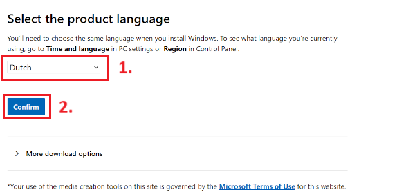
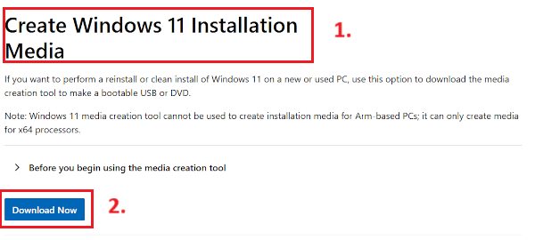
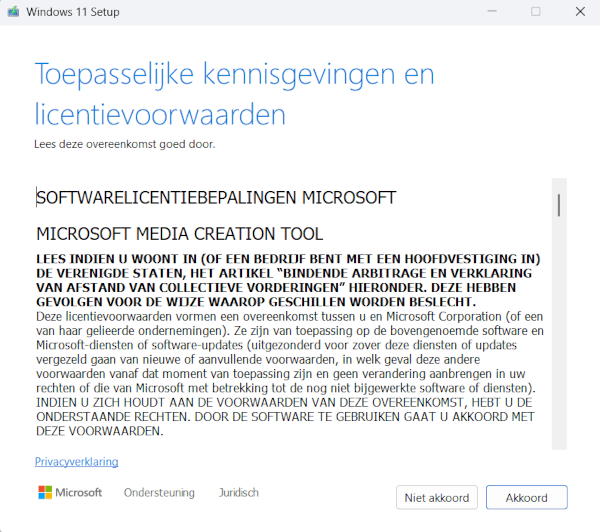
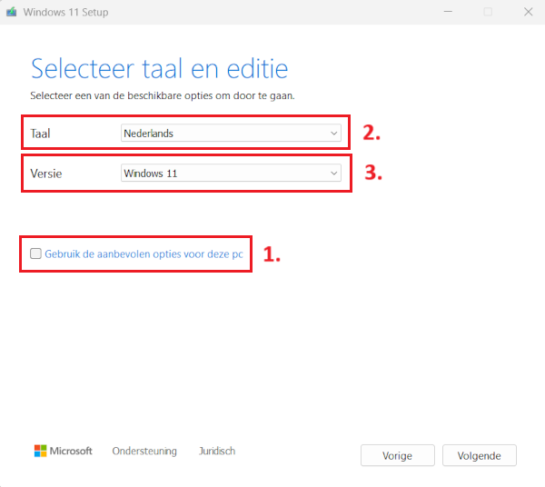
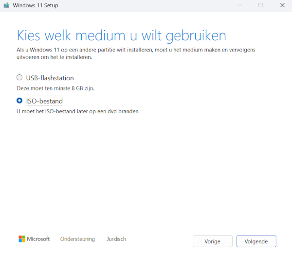
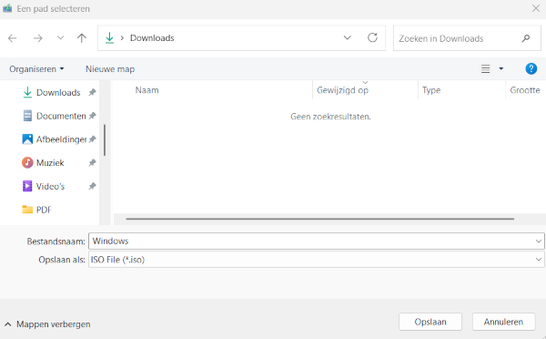
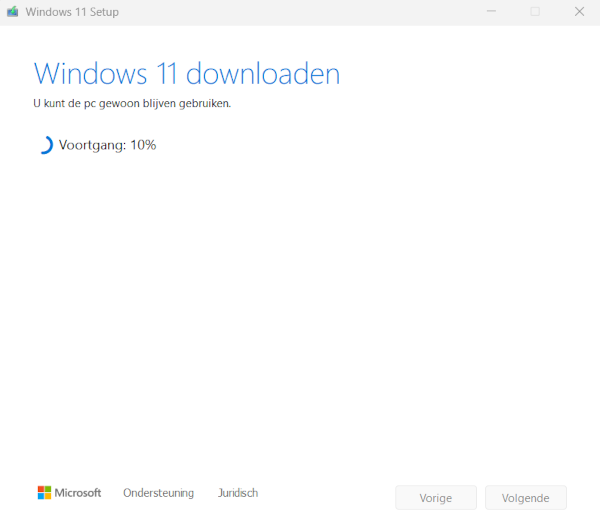

Windows 11 ISO downloaden
Je kan de Windows 11 ISO op verschillende manieren downloaden:
- Het ISO-bestand rechtstreeks downloaden
- De Windows Media Creation Tool gebruiken
De aanbevolen en eenvoudigste manier om de Windows 11 ISO te verkrijgen is de eerste methode: rechtstreeks downloaden. Deze methode is echter soms onbetrouwbaar. Daarom beschrijven we ook een tweede optie: de Windows Media Creation Tool.
1. Het ISO-bestand rechtstreeks downloaden
1.1. Navigeer naar de Windows 11-downloadpagina van Microsoft
- Nederlandstalige Windows 11-downloadpagina van Microsoft
- Engelstalige Windows 11-downloadpagina van Microsoft
1.2. Sectie "Download Windows 11 Disk Image (ISO) for x64 devices"
- Scroll naar beneden naar de sectie "Download Windows 11 Disk Image (ISO) for x64 devices".
- Selecteer Windows 11 (multi-edition ISO for x64 devices) in de vervolgkeuzelijst.
- Klik op de knop "Download Now".

1.3. De taal selecteren
- Selecteer de taal in de vervolgkeuzelijst.
- Klik op de knop "Confirm".

1.4. Aanvraag valideren
Microsoft valideert je aanvraag. Als dat lukt, start de download automatisch. Mislukt het, probeer dan de tweede methode en download de Windows 11-image met de Windows Media Creation Tool.
2. De Windows Media Creation Tool gebruiken
2.1. Navigeer naar de Windows 11-downloadpagina van Microsoft
- Nederlandstalige Windows 11-downloadpagina van Microsoft
- Engelstalige Windows 11-downloadpagina van Microsoft
2.2. Sectie "Create Windows 11 Installation Media"
- Scroll naar beneden naar "Create Windows 11 Installation Media".
- Klik op de knop "Download Now".

2.3. De installer starten
- Dubbelklik op het bestand mediacreationtool.exe dat je zonet hebt gedownload om de installer te starten.
2.4. De licentieovereenkomst accepteren

2.5. Taal en editie
- Vink "Use the recommended options for this PC" uit.
- Selecteer je voorkeurstaal.
- Version (laat de standaardwaarde staan).

2.6. Media
- Kies ISO file

2.7. Downloadmap
- Kies een locatie waar het Windows ISO-bestand wordt opgeslagen. Aanbevolen: gebruik de map Downloads van Windows.

2.8. Downloaden
De download start en je ziet een voortgangsindicator die de status weergeeft.
